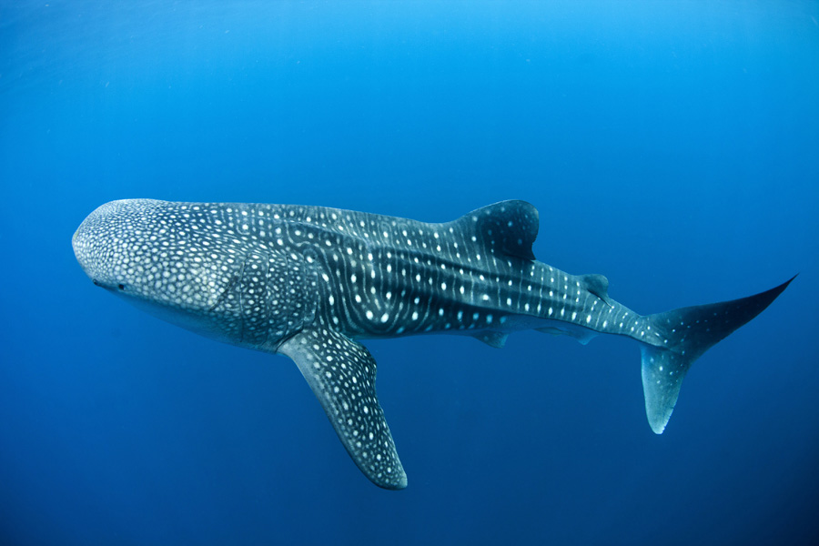

수염상어목에 속하는 상어의 일종으로 현존하는 고래상어과에 속하는 유일한 속이자 종이다.
현존하는 어류 중에서 가장 큰 종이다. 몸길이 18.8m에 몸무게 45.5t까지 자라는 것으로 알려져 있다.
난태생이다. 1996년 7월 대만에서 잡힌 암컷의 경우 새끼를 무려 300마리나 임신한 상태였으며, 이 많은 새끼들은 한번에 모두 출산되지 않고 천천히 조금씩 낳는다고 한다. 성체의 거대한 덩치에 걸맞게 갓나온 새끼는 약 40- 60 cm씩이나 된다. 작게 보일 수도 있지만 플랑크톤이라고 불러도 좋을 만큼 작디 작은 새끼 물고기를 낳는 물고기와 비교하면 어마무시하게 큰 셈. 개복치를 보면 알겠지만 덩치가 커도 작은 새끼를 낳는 물고기는 아주 많다.
< → <